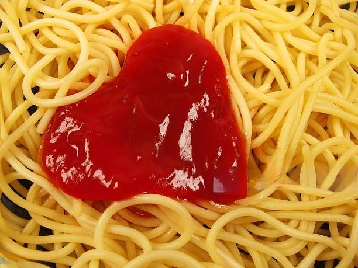

Ketchup pasta... So good, so fresh

A (really) easy dish to make
Enough of all these fancies meal recipe ? Just came back from work and tired ?
Let's keep it cool and simple and prepare this lovely dish shall we.
Ingredients
- Pasta
- Water
- Ketchup
- Lot of love
Recipe instructions
- Throw whatever pasta you have in some boiling water
- Rinse them
- Splash all of the ketchup into your preparation
- Ezpz enjoy